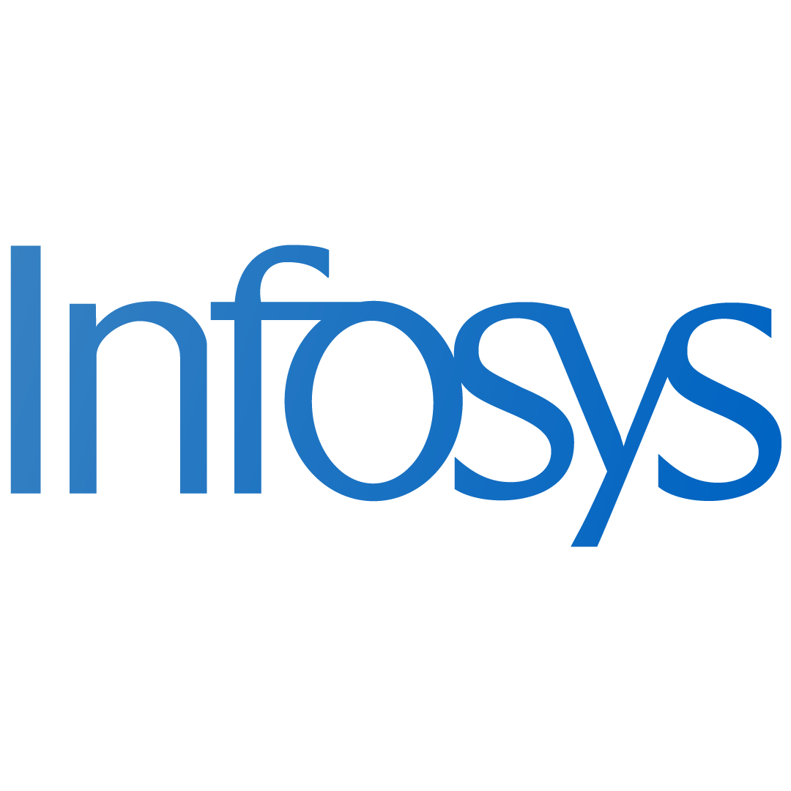
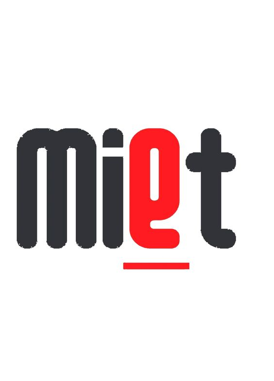

What I work with
What I've built
ML web app estimating diamond prices (carat, cut, color, clarity). Decision Tree model — R² score 0.9541. CI/CD via GitHub Actions.
Segments customers from CSV/Excel using KMeans clustering. PCA reduces dimensions for interactive 2D cluster visualisation.
Classifies 10 Indian plant species from leaf images. ResNet-50 achieved 95%+ accuracy, outperforming VGG16 & InceptionV3.
Detects vehicles in video frames with YOLOv8 and reads license plate text in real-time using EasyOCR.
Fetches YouTube transcripts via youtube_transcript_api
and generates concise notes using LangChain + LLM pipeline.
Voice-powered chatbot supporting multiple languages via STT/TTS. Ideal for customer support, accessibility & education.
Projects in this category are under active development. Check back soon!
My journey


Continuous learning
Data Science Masters Pro 2024
iNeuron
Generative AI with LangChain & LlamaIndex
iNeuron
Data Analysis with Python
freeCodeCamp
Scientific Computing with Python
freeCodeCamp
JavaScript Algorithms & Data Structures
freeCodeCamp
Infosys Certified Machine Learning Professional
Infosys Lex
Infosys Certified Data Science using Python Professional-Part1
Infosys Lex
200+ Problems Solved
LeetCode
Let's talk
Whether you have a project, a question, or just want to say hi — my inbox is always open.
Download Resume